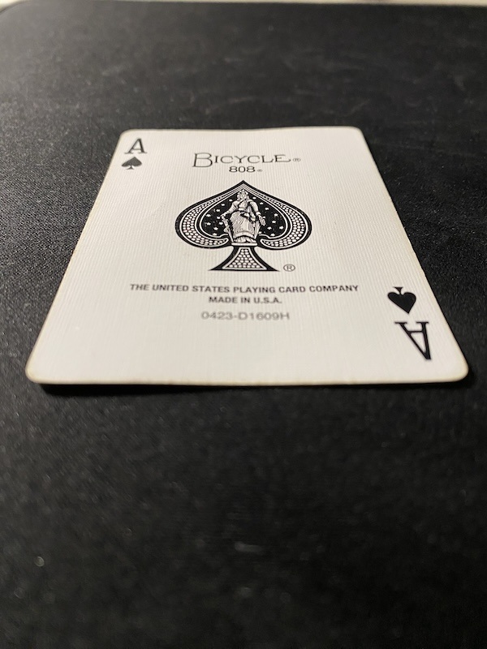
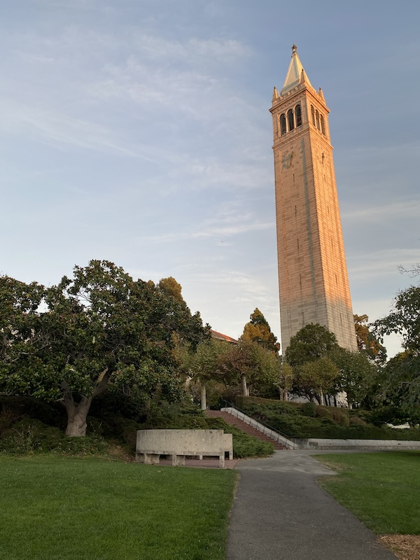
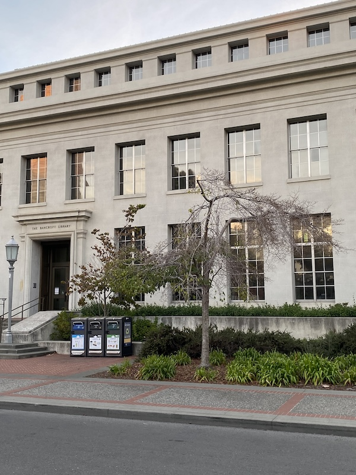
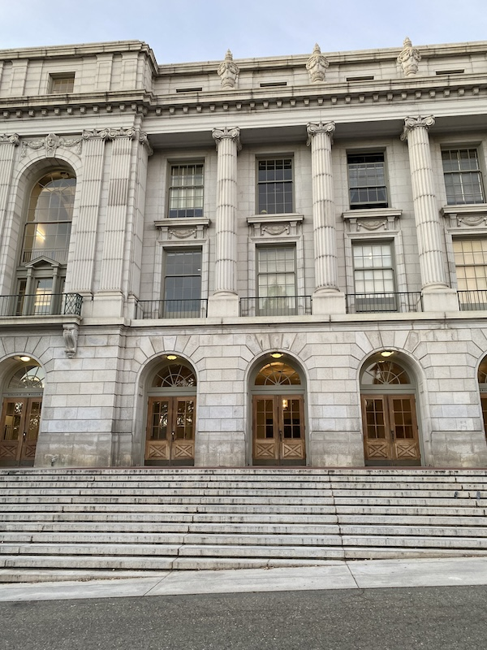

Part 1: Shoot and Digitize Pictures
Before starting to work on the project, I first needed to source pictures that I would use when creating mosaics. I decided to capture various buildings around campus for my mosaics as well as items in my apartment to test rectification. Utilizing my phone camera, I locked certain settings such as focus and exposure and took pictures from the same center of projection.
Here are the images that I will rectify to test my warp function:

Card

Car
Here are the images that I will use when creating mosaics.

Campanile Left

Campanile Middle

Library Left

Library Middle

Wheeler Hall Left

Wheeler Hall Middle

Wheeler Hall Right